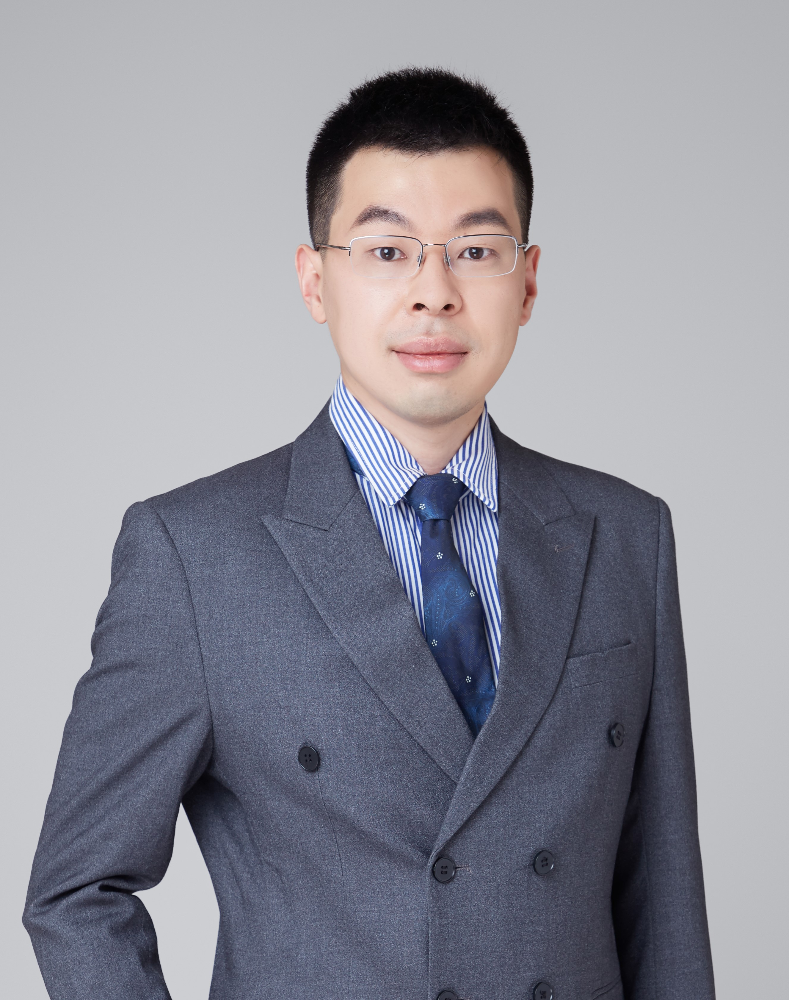

司梦维 Mengwei Si

Associate Professor
Department of Electronic Engineering
Shanghai Jiao Tong University
Email: mengwei.si@sjtu.edu.cn
Address: 800 Dongchuan Road, Minhang, SEIEE 1-501, Shanghai 200240
欢迎有志于集成电路微电子器件研究的电子、材料、物理背景的同学加入我们课题组。请感兴趣的同学将个人简历、成绩单以及其他申请人认为必要的材料发送至mengwei.si@sjtu.edu.cn。
电子器件方向博士后招聘，招聘信息详见：博士后招聘
Biography
Dr. Mengwei received his B.S. degree in Electronic Engineering from Shanghai Jiao Tong University, Shanghai, China, in 2012. He received his Ph.D. degree in Electrical and Computer Engineering from Purdue University, West Lafayette, USA, in 2018. Before joining Shanghai Jiao Tong University in 2021, he was a postdoc with Department of Electrical and Computer Engineering at Purdue University. He is currently an associate professor with Department of Electronic Engineering, Shanghai Jiao Tong University, Shanghai, China. His research interests include semiconductor fabrication, semiconductor materials and devices, ferroelectric materials, nanoscale devices and technology and atomic layer deposition. He has published over 100 papers in international journals and conferences, including 4 ESI highly cited papers, with over 2500 citations in recent 5 years. He has published research papers as first author on Nature Electronics and Nature Nanotechnology. He has published research papers as first author on Nature Electronics and Nature Nanotechnology. He has published 12 papers on IEDM and 7 papers on VLSI, which are the premier conference in microelectonic devices. His work was reported by well-recognized media for over 20 times. He gave over 20 invited and contributed talks in international conferences.
个人介绍
司梦维，上海交通大学电子信息与电气工程学院电子工程系副教授，国家级青年人才计划获得者。2012年毕业于上海交通大学获电子科学与技术专业学士学位。2018年获普渡大学电子与计算机工程专业博士学位。2018年开始在普渡大学从事博士后研究。2021年加入上海交通大学电子工程系，现任长聘教轨副教授，博士生导师。主要研究方向包括集成电路工艺、半导体材料与器件、铁电材料与铁电器件、氧化物半导体、纳米电子器件、原子层沉积等。在国际主流期刊会议发表论文100余篇，其中ESI高被引论文4篇，谷歌学术引用超过3000次。以第一作者在Nature Nanotechnology与Nature Electronics发表文章各1篇。在半导体器件领域顶级会议IEDM发表论文14篇、VLSI发表论文7篇。成果被知名媒体Science Daily等评论报道20余次。在国际会议做特邀报告与口头报告20余次。
研究方向
原子层沉积氧化物半导体
基于原子层沉积技术，实现原子尺度的0.7 nm超薄半导体材料，提出了超薄氧化物半导体的电子输运原理。（Nano Lett. 2020）
研制高性能超短沟氧化铟晶体管，得到最大电流超过2 A/mm，打破氧化物半导体最大电流的记录，该工作在半导体器件领域顶刊IEEE Electron Device Lett.被评为编辑特选论文（Editor’s peak）。（EDL 2020）
研制快速热退火、氧等离子等沉积后处理技术，实现增强模式晶体管、低缺陷密度与近理论极限的亚阈值摆幅,解决氧化物半导体在后端工艺中的氢掺杂问题。（TED 2021）
研制并首次在实验中实现后端工艺兼容的原子层沉积氧化物半导体集成电路，实现高增益、高噪声容限、低工作电压的反相器。（VLSI 2021）
研制原子层沉积氧化物半导体三维鳍式晶体管，实验中首次实现了基于原子层沉积氧化物半导体的三维器件集成。（VLSI 2021）
铁电材料与铁电电子器件
研制了高性能铁电氧化铟锡晶体管，通过铁电极化实现超高载流子浓度(>0.8×1014 /cm2)的氧化铟锡晶体管。（TED 2021）
发明新型不对称铁电半导体结，获得高开关比、高保持与疲劳性能的新型两端铁电器件。（ACS Nano 2021）
发明新型铁电半导体场效应晶体管（Nat. Electron. 2019, IEDM 2019），首次在实验中将二维铁电半导体应用于场效应晶体管的沟道，对铁电存储器有重要意义和应用前景。
铁电铪锆氧化物系统性与建设性的工作，打破纳米尺度高剩余极化的记录（VLSI 2019）与铁电极化反转速度纪录（VLSI 2018, APL 2019, IEDM 2019），并提出了铁电介电结构中极化反转的基本原理与铁电晶体管在高能效逻辑电路中应用的可能性（ACS AEM 2019，VLSI 2020）。
研制了世界上首个基于CuInP2S6和MoS2的二维异质结铁电晶体管。（ACS Nano 2018）
基于二维半导体材料的负电容场效应晶体管
在二维硫化钼负电容晶体管取得突破性进展（Nat. Nanotechnol. 2017, IEDM 2017），实验上在二维晶体管中打破传统MOSFET器件室温下亚阈值摆幅不能小于60 mV/dec的物理极限，同时首次观测到负电容引起的负源漏电阻现象。
研制了世界上首个p型陡直亚阈特性二维硒化钨负电容晶体管。（Nano Lett. 2018）
在二维负电容场效应晶体管的研究工作被Nature Nanotechnology News and Views, Phys.org, Purdue Research News等专题报道。在Appl. Phys. Lett.作为客座编辑综述负电容场效应晶体管相关工作并发表专题社论。
Publication
*Corresponding author and †Equal contribution
Book/Book Chapter
- M. Si, X. Li, W. Wu, S. Alghamdi, and P. D.Ye, “Low-Frequency Noise in III-V, Ge, and 2D Transistors,” In Noise in Nanoscale Semiconductor Devices. Cham, Switzerland: Springer, 2020, ch. 10, pp. 335-357.
- H. Zhou, J. Noh, H. Bae, M. Si, and P. D.Ye, “Field-Effect Transistors 4,” In Gallium Oxide. Cham, Switzerland: Springer, 2020, ch. 34, pp. 623-638.
Journal and Selected Conference Proceedings
2021
- Z. Lin, M. Si, Y.-C. Luo, X. Lyu, A. Charnas, Z. Chen, Z. Yu, W. Tsai, P. C. McIntyre, R. Kanjolia, M. Moinpour, S. Yu, P. D. Ye, “High-Peformance BEOL-Compatible Atomic-Layer-Deposited In2O3 Fe-FETs Enabled by Channel Length Scaling down to 7 nm: Achieving Performance Enhancement with Large Memory Window of 2.2 V, Long Retention > 10 years and High Endurance > 108 Cycles,” in 2021 IEEE International Electron Devices Meeting (IEDM), 2021. PDF
- R. Kudoru, A. K. Saha, M. Si, X. Lyu, P. D. Ye, and S. K. Gupta, “Variation and Stochasticity in Polycrystalline HZO based MFIM: Grain-Growth Coupled 3D Phase Field Model based Analysis,” in 2021 IEEE International Electron Devices Meeting (IEDM), 2021. PDF
- M. Si, H.-Y. Cheng, T. Ando, G. Hu, and Peide D. Ye, “Overview and Outlook of Emerging Non-Volatile Memories,” MRS Bulletin, 2021. PDF
- A. K. Saha, M. Si, P. D. Ye, and S. K. Gupta, “Multi-domain Polarization Switching in HZO-Dielectric Stack: The Role of Dielectric Thickness,” Appl. Phys. Lett., 2021. PDF
- C. Niu, G. Qiu, Y. Wang, M. Si, W. Wu, and Peide D. Ye, “Bilayer Quantum Hall States in an nType Wide Tellurium Quantum Well,” Nano Lett., 2021. PDF
- M. Si and Peide D. Ye, “The Critical Role of Charge Balance on the Memory Characteristics of Ferroelectric Field-Effect Transistors,” IEEE Trans. Electron Devices, 2021. PDF
- M. Si, Z. Lin, Z. Chen, and Peide D. Ye, “High-Performance Atomic-Layer-Deposited Indium Oxide 3D Transistors and Integrated Circuits for Monolithic 3D Integration,” IEEE Trans. Electron Devices, 2021. PDF
- Z. Lin, M. Si, X. Lyu, and P. D. Ye, , “High-Performance In2O3-Based 1T1R FET for BEOL Memory Application,” IEEE Trans. Electron Devices,vol. 68, no. 8, pp. 3775-3779, 2021. PDF
- H. Bae, A. Charnas, W. Chung, M. Si, X. Lyu, X. Sun, J. Park, H. Wang, D. Zemlyanov, and P. D. Ye, “Ultrathin Transparent Copper(I) Oxide Films Grown by Plasma-Enhanced Atomic Layer Deposition for Back-end-of-line p-Type Transistors,” Nano Express,vol. 2, no. 2, p. 020023, 2021. PDF
- M. Si, Z. Lin, Z. Chen, and P. D. Ye, “First Demonstration of Atomic-Layer-Deposited BEOL-Compatible In2O3 3D Fin Transistors and Integrated Circuits: High Mobility of 113 cm2/V·s, Maximum Drain Current of 2.5 mA/μm and Maximum Voltage Gain of 38 V/V in In2O3 Inverter; in 2021 IEEE Symposium on VLSI Technology (VLSI), p. T2-4, 2021. PDF
- J. Noh, H. Bae, J. Li, Y. Luo, Y. Qu, T. J. Park, M. Si, X. Chen, A. R. Charnas, W. Chung, X. Peng, S. Ramanathan, S. Yu, and P. D. Ye, “First Experimental Demonstration of Robust HZO/β-Ga2O3 Ferroelectric Field-Effect Transistors as Synaptic Devices for Artificial Intelligence Applications in a High Temperature Environment,” IEEE Trans. Electron Devices, vol. 68, no. 5, pp. 2515-2521, 2021. PDF
- M. Si, Z. Z, S.-C. Chang, N. Haratipour, D. Zheng, J. Li, U. E. Avci, and Peide D. Ye, “Asymmetric Metal/α-In2Se3/Si Crossbar Ferroelectric Semiconductor Junction,” ACS Nano, vol. 15, no. 3, pp. 5689-5695, 2021. PDF
- M. Si, A. Murray, Z. Lin, J. Andler, J. Li, J. Noh, S. Alajlouni, C. Niu, X. Lyu, D. Zheng, K. Maize, A. Shakouri, S. Datta, R. Agrawal, and Peide D. Ye, “BEOL Compatible Indium-Tin-Oxide Transistors: Switching of Ultra-High-Density 2D Electron Gas over 0.8×1014 /cm3 at Oxide/Oxide Interface by the Change of Ferroelectric Polarization,” IEEE Trans. Electron Devices, vol. 68, no.7, pp. 3195-3199, 2021. PDF
- J. Li, M. Si, Y. Qu, X. Lyu, and P. D. Ye, “Quantitative Characterization of Ferroelectric/Dielectric Interface Traps by Pulse Measurements,” IEEE Trans. Electron Devices, vol. 68, no. 3, pp. 1214-1220, 2021. PDF
- A. Charnas, M. Si, Z. Lin, and P. D. Ye, “Enhancement-Mode Atomic-Layer Thin In2O3 Transistors with Maximum Current Exceeding 2 A/mm at Drain Voltage of 0.7 V Enabled by Oxygen Plasma Treatment,” Appl. Phys. Lett., vol. 118, p.025107, 2021. PDF
- M. Si, A. Charnas, Z. Lin, and P. D. Ye, “Enhancement-Mode Atomic-Layer-Deposited In2O3 Transistors with Maximum Drain Current of 2.2 A/mm at Drain Voltage of 0.7 V by Low-Temperature Annealing and Stability in Hydrogen Environment,” IEEE Trans. Electron Devices, vol. 68, no. 3, pp.1075-1080, 2021. PDF
2020
- M. Si, Y. Hu, Z. Lin, X. Sun, A. Charnas, D. Zheng, X. Lyu, H. Wang, K. Cho, and P. D. Ye, “Why In2O3 Can Make 0.7 nm Atomic Layer Thin Transistors?,” Nano Lett., vol. 21, no. 1, pp. 500-506, 2021. PDF Supplement
- M. Si, Z. Lin, A. Charnas, and P. D. Ye, “Scaled Atomic-Layer-Deposited Indium Oxide Nanometer Transistors with Maximum Drain Current Exceeding 2 A/mm at Drain Voltage of 0.7 V,” IEEE Electron Device Lett., vol. 42, no.2, pp. 184-187, 2021. PDF
- A. K. Saha, M. Si, K. Ni, S. Datta, P. D. Ye, and S. K. Gupta, “Ferroelectric Thickness Dependent Domain Interactions in FEFETs for Memory and Logic: A Phase-field Model based Analysis,” in 2020 IEEE International Electron Devices Meeting (IEDM), 2020. PDF
- A. K. Saha, M. Si, P. D. Ye, and S. K. Gupta, “α-In2Se3 based Ferroelectric-Semiconductor Metal Junction for Non-Volatile Memories,” Appl. Phys. Lett., vol. 117, no. 18, p. 183504, 2020. PDF
- Y. Qu, J. Li, M. Si, X. Lyu, and P. D. Ye, “Quantitative Characterization of Interface Traps in Ferroelectric/Dielectric Stack Using Conductance Method,” IEEE Trans. Electron Devices, vol. 67, no.12, pp. 5315-5321, 2020. PDF
- M. Si, Z. Lin, J. Noh, J. Li, W. Chung, and P. D. Ye, “The Impact of Channel Semiconductor on the Memory Characteristics of Ferroelectric Field-Effect Transistor,” IEEE J. Electron Devices Soc., vol. 8, pp. 864-849, 2020. PDF
- M. Si, J. Andler, X. Lyu, C. Niu, S. Datta, R. Agrawal, P. D. Ye, “Indium-Tin-Oxide Transistors with One Nanometer Thick Channel and Ferroelectric Gating,” ACS Nano, vol. 14, no. 8, pp. 11542-11547, 2020. PDF Supplement
- S. M. Neumayer, L. Tao, A. O'Hara, J. Brehm, M. Si, P.-Y. Liao, T. Feng, S. V. Kalinin, P. D. Ye, S. T. Pantelides, P. Maksymovych, N. Balke, “Alignment of Polarization against an Electric Field in van der Waals Ferroelectrics,” Phys. Rev. Appl., vol. 15, no. 6, p. 064063, 2020. PDF
- G. Qiu, C. Niu, Y. Wang, M. Si, Z. Zhang, W. Wu, and P. D. Ye, “Quantum Hall effect of Weyl fermions in n-type semiconducting tellurene,” Nat. Nanotechnol., vol. 15, pp. 585-591, 2020. PDF
- C. Niu, G. Qiu, Y. Wang, Z. Zhang, M. Si, W. Wu, and P. D. Ye, “Gate-tunable strong spin-orbit interaction in two-dimensional tellurium probed by weak antilocalization,” Phys. Rev. B, vol. 101, no. 20, p. 205414, 2020. PDF
- J.-K. Qin, P.-Y. Liao, M. Si, S. Gao, G. Qiu, J. Jian, Q. Wang, S.-Q. Zhang, S. Huang, A. Charnas, Y. Wang, M. J. Kim, W. Wu, X. Xu, H.-Y. Wang, L. Yang, Y. K. Yap, P. D. Ye, “Raman response and transport properties of tellurium atomic chains encapsulated in nanotubes,” Nat. Electron., vol. 3, pp. 141-147, 2020. PDF
- S. Alghamdi, M. Si, H. Bae, H. Zhou, and P. D. Ye, “Single Pulse Charge Pumping Measurements on GaN MOS-HEMTs: Fast and Reliable Extraction of Interface Traps Density,” IEEE Trans. Electron Devices, vol. 67, pp. 444-448, 2020. PDF
- Y. He, B. Bahr, M. Si, P. D. Ye, D. Weinstein, “A Tunable Ferroelectric Based Unreleased Radio Frequency (RF) Resonator,” Microsystems & Nanoengineering, vol. 6, no. 8, pp. 1-7, 2020. PDF
- J. Li, Y. Qu, M. Si, X. Lyu, and P. D. Ye, “Multi-Probe Characterization of Ferroelectric/Dielectric Interface by C-V, P-V and Conductance Methods,” in 2020 IEEE Symposium on VLSI Technology (VLSI), 2020. PDF
2019
- M. Si, Y. Luo, W. Chung, H. Bae, D. Zheng, J. Li, J. Qin, G. Qiu, S. Yu, and P. D. Ye, “A Novel Scalable Energy-Efficient Synaptic Device: Crossbar Ferroelectric Semiconductor Junction,” in 2019 IEEE International Electron Devices Meeting (IEDM), 2019, pp. 130-133. PDF
- X. Lyu, M. Si, P. R. Shrestha, K. P. Cheung and P. D. Ye, “First Direct Measurement of Sub-Nanosecond Polarization Switching in Ferroelectric Hafnium Zirconium Oxide,” in 2019 IEEE International Electron Devices Meeting (IEDM), 2019, pp. 342-345. PDF
- H. Bae, A. Charnas, X. Sun, J. Noh, M. Si, W. Chung, G Qiu, X. Lyu, S. Alghamdi, H. Wang, D. Zemlyanov, and P. D. Ye, “Solar-blind UV photodetector based on atomic layer deposited Cu2O and nano-membrane β-Ga2O3 pn oxide heterojunction,” ACS Omega, vol. 4, no. 24, pp. 20756-20761, 2019. PDF
- M. Si, A. K. Saha, S. Gao, G. Qiu, J. Qin, Y. Duan, J. Jian, H. Wang, W. Wu, S. K. Gupta, and P. D. Ye, “A Ferroelectric Semiconductor Field-Effect Transistor,” Nat. Electron., vol. 2, pp. 580-586, 2019. PDF Supplement
- M. Si, A. K. Saha, P.-Y. Liao, S. Gao, S. M. Neumayer, J. Jian, J. Qin, N. Balke, H. Wang, P. Maksymovych, W. Wu, S. K. Gupta, and P. D. Ye, “Room Temperature Electrocaloric Effect in Layered Ferroelectric CuInP2S6 for Solid State Refrigeration,” ACS Nano, vol. 13, no. 8, pp. 8760-8765, 2019. PDF
- M. Si, X. Lyu, P. Shrestha, X. Sun, H. Wang, K. P. Cheung, and P. D. Ye, “Ultrafast Measurements of Polarization Switching Dynamics on Ferroelectric and Anti-Ferroelectric Hafnium Zirconium Oxide,” Appl. Phys. Lett., vol. 115, p. 072107, 2019. PDF
- J. Noh, S. Alajlouni, M. J. Tadjer, J. C. Culbertson, M. Si, H. Zhou, P. A. Bermel, A. Shakouri, and P. D. Ye, “High Performance β-Ga2O3 Nano-membrane Field Effect Transistors on a High Thermal Conductivity Diamond Substrate,” IEEE J. Electron Devices Soc., vol. 7, pp. 914-918, 2019. PDF
- W. Chung, H. Wu, W. Wu, M. Si, and P. D. Ye, “Experimental Extraction of Ballisticity in Germanium Nanowire NMOSFETs,” IEEE Trans. Electron Devices, vol. 66, no. 8, pp. 3541-3548, 2019. PDF
- M. Si, X. Lyu, and P. D. Ye, “Ferroelectric Polarization Switching of Hafnium Zirconium Oxide in Ferroelectric/Dielectric Stack,” ACS Appl. Electron. Mater., vol. 1, no. 5, pp. 745-751, 2019. PDF Supplement
- M. A. Alam*, M. Si*, and P. D. Ye*, “Recent Progress on Negative Capacitance Field-Effect Transistors: A Critical Review (Invited),” Appl. Phys. Lett., vol. 114, p. 090401, 2019. PDF
- J. Qin, H. Yan, G. Qiu, M. Si, P. Miao, Y.-Q. Duan, W.-Z. Shao, L. Zhen, C.-Y. Xu, and P. D. Ye, “Hybrid dual-channel phototransistor based on mixed-dimensional 1D t-Se and 2D ReS2 heterojunction,” Nano Res., vol. 12, no. 3, pp. 669-674, 2019. PDF
- X. Lyu, M. Si*, X. Sun, M. A. Capano, H. Wang, and P. D. Ye*, “Ferroelectric and Anti-Ferroelectric Hafnium Zirconium Oxide: Scaling Limit, Switching Speed and Record High Polarization Density,” in 2019 IEEE Symposium on VLSI Technology (VLSI), 2019, pp. 44-45. PDF
2018
- W. Chung, M. Si, and P. D. Ye, “First Demonstration of Germanium Ferroelectric Nanowire FET with high on/off ratio and Conductance States as Synaptic Device for On-chip Deep Neural Network,” in 2018 IEEE International Electron Devices Meeting (IEDM), 2018, pp. 344-347. PDF
- J. Qin, G. Qiu, W. He, J. Jian, M. Si, Y. Duan, H. Wang, W. Zhao, L. Zhen, C. Xu, and P. D. Ye, “Epitaxial Growth of 1D Atomic Chain Based Se Nanoplates on Monolayer ReS2 for High-Performance Photodetectors,” Adv. Funct. Mater., vol. 28, no. 48, p. 1806254, 2018. PDF
- H. Bae, J. Noh, S. Alghamdi, M. Si, and P. D. Ye, “Ultraviolet Light-based Current-Voltage Method for Simultaneous Extraction of Donor- and Acceptor-like Interface Traps in β-Ga2O3 FETs,” IEEE Electron Device Lett., vol. 39, no. 11, pp. 1708-1711, 2018. PDF
- M. Si†, P.-Y. Liao†, G. Qiu, Y. Duan, and P. D. Ye, “Ferroelectric Field-effect Transistors Based on MoS2 and CuInP2S6 Two-dimensional Van der Waals Heterostructure,” ACS Nano, vol. 12, no. 7, pp. 6700-6705, 2018. PDF
- M. Si, W. Chung, Y. Du, and P. D. Ye, “Steep-slope Negative Capacitance WSe2 Field-Effect Transistor,” Nano Lett., vol. 18, no. 6, pp. 3682-3687, 2018. PDF
- W. Wu, H. Wu, W. Sun, M. Si, N. Conrad, Y. Zhao, and P. D. Ye, “Mobility Fluctuation Induced Low Frequency Noise in Ultrascaled Ge Nanowire nMOSFETs with Near-Ballistic Transport,” IEEE Trans. Electron Devices, vol. 65, no. 6, pp. 2573-2577, 2018. PDF
- H. Tian, W. Ahn, K. Maize, M. Si, P. D. Ye, M. A. Alam, A. Shakouri and P. Bermel, “Thermoreflectance Imaging of Electromigration Evolution in Asymmetric Aluminum Constrictions,” J. Appl. Phys., vol. 123, no. 3, p. 035107, 2018. PDF
- C. Jiang, M. Si, R. Liang, J. Xu, P. D. Ye and M. A. Alam, “A Closed Form Analytical Model of Back-Gated 2D Semiconductor Negative Capacitance Field Effect Transistors,” IEEE J. Electron Devices Soc., vol. 6, no. 1, pp. 189-194, 2018. PDF
- W. Wu, H. Wu, J. Zhang, M. Si, Y. Zhao, and P. D. Ye, “Carrier Mobility Enhancement by Applying Back-Gate Bias in Ge-on-Insulator MOSFETs,” IEEE Electron Device Lett., vol. 39, no. 2, pp. 176-179, 2018. PDF
- W. Chung, M. Si, P. R. Shrestha, J. P. Campbell, K. P. Cheung, and P. D. Ye, “First Direct Experimental Studies of Hf0.5Zr0.5O2 Ferroelectric Polarization Switching Down to 100-picosecond in Sub-60mV/dec Germanium Ferroelectric Nanowire FETs (Late News),” in 2018 IEEE Symposium on VLSI Technology (VLSI), 2018, pp. 89-90. PDF
2017 and Early
- M. Si, C. Jiang, N. J. Conrad, H. Zhou, K. Mazie, G. Qiu, C.-T. Wu, A. Shakouri, M. A. Alam, and P. D. Ye, “Steep Slope Hysteresis-free Negative Capacitance MoS2 Transistors,” Nat. Nanotechnol., vol. 13, pp. 24-28, 2018. PDF Supplement
- M. Si, C. Jiang, C.-J. Su, Y.-T. Tang, L. Yang, W. Chung, M. A. Alam and P. D. Ye, “Sub-60 mV/dec Ferroelectric HZO MoS2 Negative Capacitance Field-effect Transistor with Internal Metal Gate: the Role of Parasitic Capacitance,” in 2017 IEEE International Electron Devices Meeting (IEDM), 2017, pp. 573-576. PDF
- W. Chung, M. Si, and P. D. Ye, “Hysteresis-free Negative Capacitance Germanium CMOS FinFETs with Bi-directional Sub-60 mV/dec,” in 2017 IEEE International Electron Devices Meeting (IEDM), 2017, pp. 365-368. PDF
- M. Si, L. Yang, H. Zhou, and P. D. Ye, “β-Ga2O3 Nano-membrane Negative Capacitance Field-effect Transistor with Steep Subthreshold Slope for Wide Bandgap Logic Applications,” ACS Omega, vol. 2, no. 10, pp. 7136-7140, 2017. PDF
- Y. Du, G. Qiu, Y. Wang, M. Si, X. Xu, W. Wu, and P. D. Ye, “1D van der Waals Material Tellurium: Raman Spectroscopy under Strain and Magneto-transport” Nano Lett., vol. 17, no. 6, pp. 3965-3973, 2017. PDF
- S. Ren, M. A. Bhuiyan, J. Zhang, X. Lou, M. Si, X. Gong, R. Jiang, K. Ni, X. Wan, E. X. Zhang, R. G. Gordon, R. A. Reed, D. M. Fleetwood, P. D. Ye and T.-P. Ma, “Total Ionizing Dose (TID) Effects in GaAs MOSFETs with La-Based Epitaxial Gate Dielectrics,” IEEE Trans. Nucl. Sci., vol. 64, no. 1, pp. 164-169, 2017. PDF
- S.-J. Chang, H. Zhou, N. Gong, D.-M. Kang, J.-W. Lim, M. Si, P. D. Ye, and T. P. Ma, “Fin-width Effects on Characteristics of InGaAs-Based Vertical Independent Double-Gate Transistor,” IEEE Electron Device Lett., vol. 38, no. 4, pp. 441-444, 2017. PDF
- H. Zhou, M. Si, S. Alghamdi, G. Qiu, L. Yang, and P. D. Ye, “High-Performance Depletion/Enhancementmode β-Ga2O3 on Insulator (GOOI) Field-Effect Transistors With Record Drain Currents of 600/450 mA/mm,” IEEE Electron Device Lett., vol. 38, no. 1, pp. 103-106, 2017. PDF
- L. Yang, G. Qiu, M. Si, A. R. Charnas, C. A. Milligan, D. Y. Zemlyanov, H. Zhou, Y. Du, Y. M. Lin, W. Tsai, Q. Paduano, and P. D. Ye, “Few-Layer Black Phosphorus PMOSFETs with BN/Al2O3 Bilayer Gate Dielectric: Achieving Ion=850uA/um,gm=340uS/um and Rc=0.58kOhm.um,” in 2016 IEEE International Electron Devices Meeting (IEDM), 2016, pp. 127-130. PDF
- H. Zhou, X. Lou, N. J. Conrad, M. Si, H. Wu, S. Alghamdi, S. Guo, R. G. Gordon, and P. D. Ye, “High Performance InAlN/GaN MOSHEMTs Enabled by Atomic Layer Epitaxy MgCaO as Gate Dielectric,” IEEE Electron Device Lett., vol. 37, no. 5, pp. 556-559, 2016. PDF
- X. Li, Y. Du, M. Si, L. Yang, S. Li, T. Li, X. Xiong, P. D. Ye, and Y. Wu, “Mechanisms of current fluctuation in ambipolar black phosphorus field-effect transistors,” Nanoscale, vol. 8, pp. 3572-578, 2016. PDF
- H. Wu, W. Wu, M. Si, and P. D. Ye, “Demonstration of Ge Nanowire CMOS Devices and Circuits for Ultimate Scaling,” IEEE Trans. Electron Devices, vol. 63, no. 8, pp. 3049-3057, 2016. PDF
- H. Zhou, S. Alghmadi, M. Si, G. Qiu, and P. D. Ye, “Al2O3/β-Ga2O3 Interface Improvement Through Piranha Pretreatment and Postdeposition Annealing,” IEEE Electron Device Lett., vol. 37, no. 11, pp. 1411-1414, 2016. PDF
- W. Wu, H. Wu, M. Si, N. Conrad, Y. Zhao, and P. D. Ye, “RTN and low frequency noise on ultra-scaled near-ballistic Ge nanowire nMOSFETs,” in 2016 IEEE Symposium on VLSI Technology (VLSI), 2016, pp. 978-979. PDF
- H. Wu, W. Wu, M. Si, and P. D. Ye, “First demonstration of Ge nanowire CMOS circuits: Lowest SS of 64 mV/dec, highest gmax of 1057 uS/um in Ge nFETs and highest maximum voltage gain of 54 V/V in Ge CMOS inverters,” in 2015 IEEE International Electron Devices Meeting (IEDM), 2015, pp. 16-19. PDF
- J. Zhang, M. Si, X. B. Lou, W. Wu, R. G. Gordon, and P. D. Ye, “InGaAs 3D MOSFETs with drastically different shapes formed by anisotropic wet etching,” in 2015 IEEE International Electron Devices Meeting (IEDM), 2015, pp. 12-15. PDF
- M. Si, N. J. Conrad, S. Shin, J. Gu, J. Zhang, M. A. Alam, and P. D. Ye, “Low-Frequency Noise and Random Telegraph Noise on Near-Ballistic III-V MOSFETs,” IEEE Trans. Electron Devices, vol. 62, no. 11, pp. 3508-3515, 2015. PDF
- X. Li, L. Yang, M. Si, S. Li, M. Huang, P. D. Ye, and Y. Wu, “Performance Potential and Limit of MoS2 Transistors,” Adv. Mater., vol. 27, no. 9, pp. 1547-1552, 2015. PDF
- S. Shin, M. A. Wahab, M. Masuduzzaman, K. Maize, J. Gu, M. Si, A. Shakouri, P. D. Ye, and M. A. Alam, “Direct observation of self-heating in III-V gate-all-around nanowire MOSFETs,” IEEE Trans. Electron Devices, vol. 62, no. 11, pp. 3516-3523, 2015. PDF
- J. Zhang, X. Lou, M. Si, H. Wu, J. Shao, M. J. Manfra, R. G. Gordon, and P. D. Ye, “Inversion-mode GaAs wave-shaped field-effect transistor on GaAs (100) substrate,” Appl. Phys. Lett., vol. 106, no. 7, p. 73506, 2015. PDF
- H. Wu, M. Si, L. Dong, J. Gu, J. Zhang, and P. D. Ye, “Germanium nMOSFETs with recessed channel and S/D: Contact, scalability, interface, and drain current exceeding 1 A/mm,” IEEE Trans. Electron Devices, vol. 62, no. 5, pp. 1419-1426, 2015. PDF
- S. Ren, M. Si, K. Ni, X. Wan, J. Chen, S. Chang, X. Sun, E. X. Zhang, R. A. Reed, D. M. Fleetwood, P. D. Ye, S. Cui, and T. P. Ma, “Total Ionizing Dose (TID) Effects in Extremely Scaled Ultra-Thin Channel Nanowire (NW) Gate-All-Around (GAA) InGaAs MOSFETs,” IEEE Trans. Nucl. Sci., vol. 62, no. 6, pp. 2888-2893, 2015. PDF
- H. Wu, W. Luo, H. Zhou, M. Si, J. Zhang, and P. D. Ye, “First experimental demonstration of Ge 3D FinFET CMOS circuits,” in 2015 IEEE Symposium on VLSI Technology (VLSI), 2015, pp. T58-T59. PDF
- H. Wu, W. Luo, M. Si, J. Zhang, H. Zhou, and P. D. Ye, “Deep sub-100 nm Ge CMOS devices on Si with the recessed S/D and channel,” in 2014 IEEE International Electron Devices Meeting (IEDM), 2014, pp. 16-17. PDF
- N. Conrad, M. Si*, S. H. Shin, J. J. Gu, J. Zhang, M. A. Alam, and P. D. Ye*, “Low-frequency noise and RTN on near-ballistic III-V GAA nanowire MOSFETs,” in 2014 IEEE International Electron Devices Meeting (IEDM), 2014, pp. 502-505. PDF
- H. Liu, A. T. Neal, M. Si, Y. Du, and P. D. Ye, “The effect of dielectric capping on few-layer phosphorene transistors: tuning the Schottky barrier heights,” IEEE Electron Device Lett., vol. 35, no. 7, pp. 795-797, 2014. PDF
- H. Wu, M. Si, L. Dong, J. Zhang, and P. D. Ye, “Ge CMOS: Breakthroughs of nFETs (Imax= 714 mA/mm, gmax= 590 mS/mm) by recessed channel and S/D,” in 2014 IEEE Symposium on VLSI Technology (VLSI), 2014, pp. 1-2. PDF
- S. Shin, M. Masuduzzaman, J.J Gu, M. A. Wahab, N. Conrad, M. Si, P. D. Ye, M. Alam, “Impact of Nanowire Variability on Performance and Reliability of Gate-all-around III-V MOSFETs,” in 2013 IEEE International Electron Devices Meeting (IEDM), 2013, pp. 189-191. PDF
- M. Si, J. J. Gu, X. Wang, J. Shao, X. Li, M. J. Manfra, R. G. Gordon, and P. D. Ye, “Effects of forming gas anneal on ultrathin InGaAs nanowire metal-oxide-semiconductor field-effect transistors,” Appl. Phys. Lett., vol. 102, no. 9, p. 93505, 2013. PDF
- H. Liu, M. Si, S. Najmaei, A. T. Neal, Y. Du, P. M. Ajayan, J. Lou, and P. D. Ye, “Statistical study of deep submicron dual-gated field-effect transistors on monolayer chemical vapor deposition molybdenum disulfide films,” Nano Lett., vol. 13, no. 6, pp. 2640-2646, 2013. PDF
- H. Liu, M. Si, Y. Deng, A. T. Neal, Y. Du, S. Najmaei, P. M. Ajayan, J. Lou, and P. D. Ye, “Switching mechanism in single-layer molybdenum disulfide transistors: an insight into current flow across Schottky barriers,” ACS Nano, vol. 8, no. 1, pp. 1031-1038, 2013. PDF
- N. Conrad, S. Shin, J. Gu, M. Si, H. Wu, M. Masuduzzaman, M. Alam, P. D. Ye, and others, “Performance and Variability Studies of InGaAs Gate-all-Around Nanowire MOSFETs,” IEEE Trans. Device Mater. Reliab., vol. 13, no. 4, pp. 489-496, 2013. PDF
- Y. Du, H. Liu, A. T. Neal, M. Si, and P. D. Ye, “Molecular Doping of Multilayer Field-Effect Transistors: Reduction in Sheet and Contact Resistances,” IEEE Electron Device Lett., vol. 34, no. 10, pp. 1328-1330, 2013. PDF
- Q. Cui, M. Si, R. A. Sporea, and X. Guo, “Simple noise margin model for optimal design of unipolar thin-film transistor logic circuits,” IEEE Trans. Electron Devices, vol. 60, no. 5, pp. 1782-1785, 2013. PDF